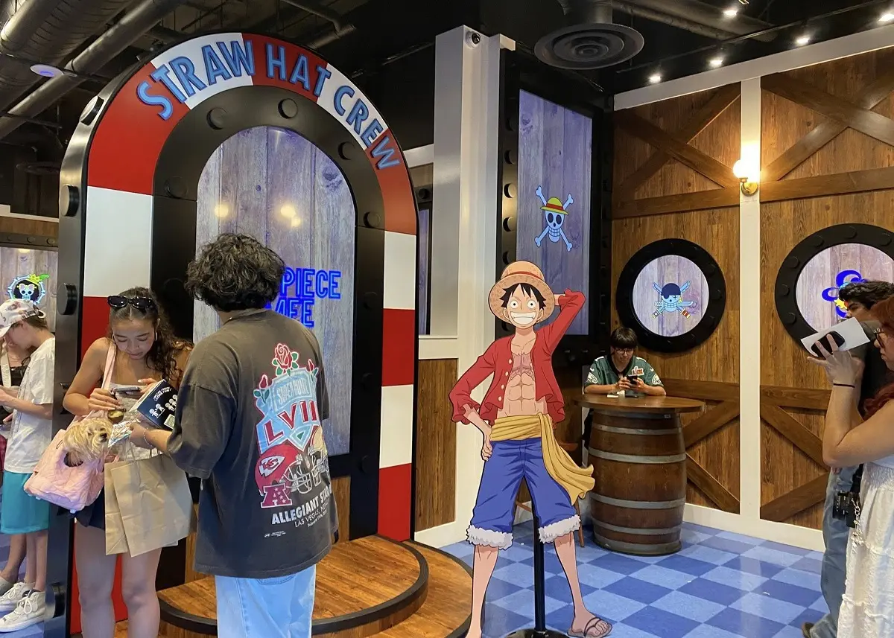

Beyond the Black & White: A Voyager’s Guide to the One Piece Cafe in Little Tokyo

Are you ready to step off the two-dimensional pages of manga and onto the deck of the Thousand Sunny? In this feature, we journey to the heart of Little Tokyo, Los Angeles, to discover one of the world's most electrifying anime haunts: the One Piece Cafe. From tasting "Devil Fruits" on Chef Sanji’s exclusive menu to watching the ocean through digital portholes, consider this guide your personal treasure map to an unforgettable experience in the kingdom of the Straw Hat Pirates.
A Deck in the Heart of Little Tokyo: Entering Straw Hat Territory
Your odyssey begins the moment you stand before the cafe’s striking storefront. A rustic wooden backdrop sets the stage for the glowing blue neon sign that proudly reads: ONE PIECE CAFE. Decorated with industrial black chains, the entrance immediately evokes the rugged atmosphere of a legendary warship.
As you draw closer, the designers’ wit shines through the exterior details. The use of wooden barrel tables is a clever homage to classic maritime culture; it feels as though you’ve just stepped onto the Thousand Sunny for a quick refreshment before the next grand voyage.
Right at the entrance, a creative greeting awaits: a circular sign featuring the Jolly Roger (the famous Straw Hat skull). Look closely—the crossbones have been elegantly replaced with a fork and spoon. This artistic signature perfectly captures the inseparable bond between the world of gourmet cuisine and the One Piece saga.
Deep into the Grand Line: Immersion in the Thousand Sunny
Crossing the threshold, the line between reality and fantasy blurs. You are no longer in LA; you are sailing the adventurous waters of the Grand Line. The interior’s most ingenious feature is the high-definition screens that seamlessly replace traditional windows. These stunning monitors broadcast live visuals of the underwater world, vibrant corals, and dancing tropical fish, providing a true sense of depth and motion. In another corner, iconic circular portholes display a vista of blue skies and endless seas—exactly what the Straw Hat crew sees from their cabins.
The craftsmanship of the interior hull is remarkable:
- The Hull: Extensive use of brown wood panels and white pillars reinforces the feeling of being inside a classic, sturdy vessel.
- Color Palette: The floor is covered in a dark and light blue checkered pattern, evoking the sea and creating a sharp visual contrast with the brilliant red chairs.
- Layout: Large wooden barrels serve as table bases—a classic symbol of a pirate ship's hold.
- Industrial Details: A black ceiling with exposed industrial pipes, paired with spot lighting and circular wall lamps, creates a warm, intimate atmosphere identical to the interior of a great ship.
Upon entry, a magnificent life-sized standee of Monkey D. Luffy greets you—the perfect spot for your first memorable selfie.
The Straw Hat Treasure Trove: The Merchandise Station
The journey continues at the Merchandise section, an enchanting blend of a miniature museum and a modern boutique built into the wooden "hull" of the ship.
- Apparel: Exclusive t-shirts with unique One Piece graphic designs are showcased on the right.
- Accessories: Shelves are packed with souvenirs including keychains, heat-sensitive mugs, and popular figures of characters like Chopper and Luffy.
- Legendary Items: Luffy’s iconic straw hat and decorative Devil Fruits (like the Gum-Gum and Flame-Flame fruits) are among the most coveted items on the shelves.
Don't forget to look above the display cases to see several stunning art frames, featuring exclusive artwork ranging from Luffy in Gear 5 to modern takes on the rest of the crew.
A Feast in Chef Sanji’s Kitchen
After exploring the deck, it’s time for the most delicious part of our trip. Chef Sanji awaits with an exciting menu where every dish carries the signature of a beloved crew member. For travelers, the prices are quite fair, with most items falling under $25.
The Highlights of the Magic Menu:
- Mighty Meats Pirate Platter (~$40): A massive tray of grilled meats, bacon, and sausages, designed to satisfy Luffy’s insatiable appetite.
- Sanji’s Seafood Fried Rice (~$20): A savory fried rice with shrimp and octopus, paying tribute to Sanji’s peerless maritime culinary skills.
- Brook’s Chicken Katsu Curry (~$23): A thick, warm Japanese curry that is a massive hit among hardcore fans.
- Gum-Gum Devil Fruit Mousse Bomb (~$29): The cafe’s social media star—a mousse cake shaped like a Devil Fruit with a white chocolate coating.
- Chopper Hat Cake (~$12): Adorable small cakes shaped like Chopper’s iconic hat.
High Seas Specialty Drinks: A Sip of Your Favorites
- Franky’s Coke-a-Cola Float: A fan favorite, combining cola (his primary fuel) with ice cream for a "Super" energy boost.
- Nami’s Mikan Slushy: A refreshing orange slushy reminiscent of Nami’s nostalgic tangerine groves.
- Zoro’s Matcha Latte: A green matcha latte representing the strength and fighting style of the crew’s master swordsman.
Where is the Thousand Sunny Anchored?
To join this voyage, head to the beating heart of Japanese culture in Los Angeles. The cafe is located at 241 San Pedro St in the historic Little Tokyo district. Little Tokyo is the ultimate hub for Otakus in America, boasting an unparalleled concentration of anime shops, traditional restaurants, and cultural centers.
Its strategic location allows you to walk just a few minutes after your meal to reach Japanese Village Plaza or the massive Kinokuniya bookstore to complete your manga collection.
Golden Tips for Fledgling Sailors
Before you set sail, remember these two key points:
- Cashless Only: Remember, "Berries" might work in the anime, but cash has no value here! The cafe is strictly cashless, so ensure you have your bank card ready.
- Operating Hours: The ship’s doors typically open from 11 AM to 9 or 10 PM. Plan your visit to catch the beautiful night lighting of the cafe!